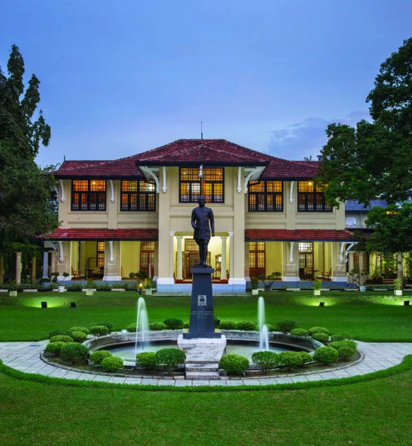

| directorit@kdu.ac.lk | +94-11-2605715 |
| Department of Computer Science | ||||
The Department of Computer Science was established on 1st January 2015 with the objective of producing CS professionals of international standard and primarily to fulfill requirements of the booming IT industry and also to develop research. As the youngest department in the faculty it offers course modules related to scientific and theoretical aspects of computing and also introduces new course modules on emerging trends in computing with an emphasis on the developments in Artificial Intelligence. The Department of Computer Science is proud to offer two major computing programmes including BSc ( Hons) in Computer Science and BSc (Hons) in Software Engineering. These programs are targeting for physical science students from the GCE A/L. The department engages in a wide spectrum of research in broad areas of Theoretical Computing and Artificial Intelligence. This department also envisages strengthening the faculty wide research culture. |
||||
|  | ||||
| Degrees offered by Department of Computer Science |